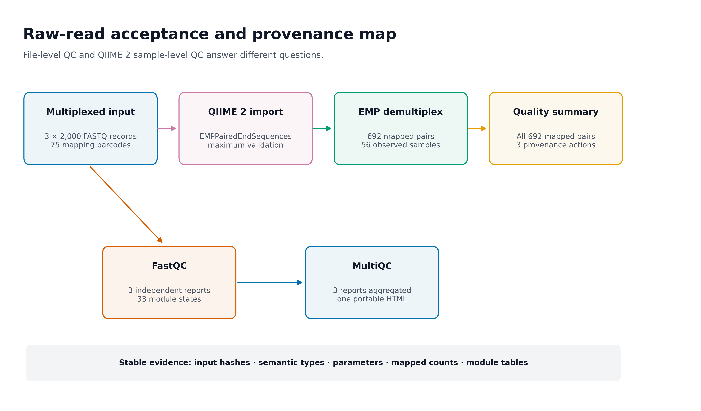
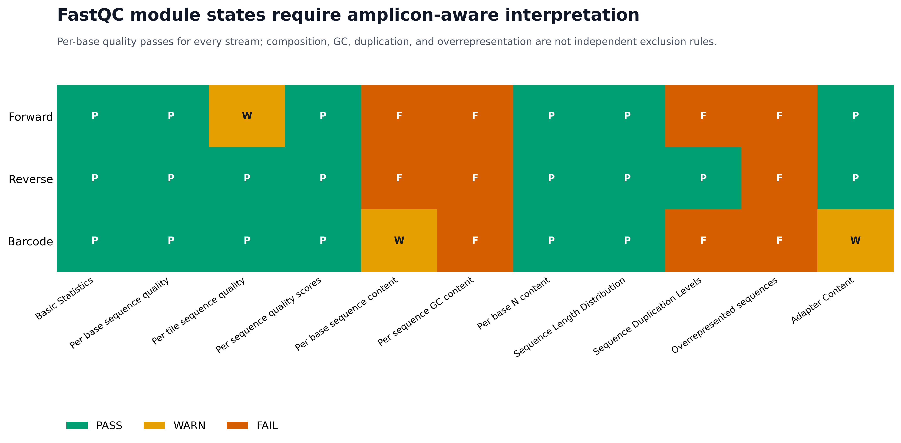
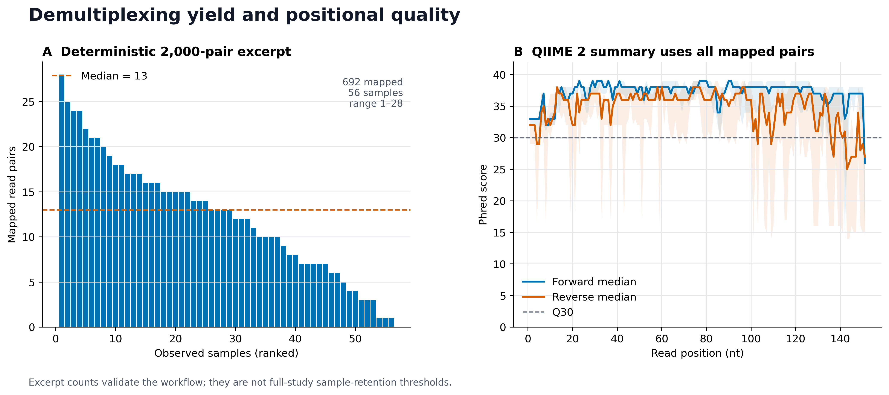

library(ggplot2)
library(dplyr)
library(readr)
library(tidyr)
library(tibble)
library(scales)
set.seed(20260719)
pal_pub <- c(
"#0072B2", "#D55E00", "#009E73", "#CC79A7",
"#E69F00", "#56B4E9", "#F0E442", "#999999"
)
scale_color_pub <- function(...) {
ggplot2::scale_color_manual(values = pal_pub, ...)
}
scale_fill_pub <- function(...) {
ggplot2::scale_fill_manual(values = pal_pub, ...)
}
theme_pub <- function(base_size = 12) {
ggplot2::theme_bw(base_size = base_size, base_family = "sans") +
ggplot2::theme(
panel.grid = ggplot2::element_blank(),
axis.text = ggplot2::element_text(color = "black"),
axis.ticks = ggplot2::element_line(
color = "black",
linewidth = 0.3
),
plot.title.position = "plot",
legend.key = ggplot2::element_blank(),
legend.background = ggplot2::element_rect(
fill = scales::alpha("white", 0.6),
color = NA
)
)
}
save_pub <- function(
plot,
file_base,
width = 180,
height = 115,
units = "mm",
dpi = 350,
write_tiff = TRUE
) {
dir.create(
dirname(file_base),
recursive = TRUE,
showWarnings = FALSE
)
ggplot2::ggsave(
paste0(file_base, ".pdf"),
plot,
width = width,
height = height,
units = units,
device = grDevices::cairo_pdf
)
ggplot2::ggsave(
paste0(file_base, ".png"),
plot,
width = width,
height = height,
units = units,
dpi = dpi,
bg = "white"
)
if (isTRUE(write_tiff)) {
ggplot2::ggsave(
paste0(file_base, ".tiff"),
plot,
width = width,
height = height,
units = units,
dpi = dpi,
compression = "lzw",
bg = "white"
)
}
invisible(plot)
}导入数据 + provenance + 质控（FastQC/MultiQC）
先让每一步输入、输出和来源可追溯
“导入成功”通常不会成为论文主图，但它决定后续 ASV 表是否还对应正确样本。建议至少保留三类证据：
- Raw-read acceptance and provenance map：清楚区分文件级 QC 与样本级 QC；
- FastQC module audit：完整报告 PASS/WARN/FAIL，同时按扩增子文库语境解释；
- Demultiplexing yield and positional quality：展示逐样本 reads 和 forward/reverse 质量曲线。



重要先记住一句话
FASTQ 完整、FastQC 状态正常、QIIME 2 semantic type 正确、barcode 能映射、provenance 可追溯，是五道不同的门。任何一道通过，都不能替代其余四道。
本次实测环境与结果为：
QIIME 2 / q2cli / q2-demux: 2026.4.0
FastQC: 0.12.1
MultiQC: 1.33
Input streams: 3 × 2,000 synchronized FASTQ records
Mapping metadata: 75 samples, 75 unique 12-nt barcodes
Imported type / format: EMPPairedEndSequences / EMPPairedEndDirFmt
Demultiplexed type / format: SampleData[PairedEndSequencesWithQuality] /
SingleLanePerSamplePairedEndFastqDirFmt
Mapped read pairs: 692 / 2,000 (34.6%)
Observed samples: 56
Per-sample mapped pairs: median 13, range 1–28
Provenance actions: import → demux.emp_paired → demux.summarize
FastQC reports: 3
FastQC module states: 33
Per-base quality PASS: 3 / 3 streams
MultiQC reports aggregated: 3
Required checks: 45 / 45 PASS
警告摘录结果不能外推到完整研究
这里从官方 135,487 对 reads 中等间距抽取 2,000 对，用于快速、确定性地验证接口。未在摘录中观察到的 19 个 metadata 样本，可能只是没有任何被抽中的 reads；不能据此判定这些样本在完整研究中测序失败，也不能把 34.6% 当作完整数据的拆样率。
开始前：数据与运行环境
在 Linux 或 WSL2 的项目文件夹中运行下面的下载命令。下载后保留这里的相对目录，后续命令使用同一组文件。
base_url="https://raw.githubusercontent.com/petemeng/microbiome-best-practices/3cb6a817e0c73ab7ecbec1cedc1ad80cbb9ecfaa"
for file in \
data/small/fastq/barcodes.fastq.gz \
data/small/fastq/forward.fastq.gz \
data/small/fastq/metadata.tsv \
data/small/fastq/reverse.fastq.gz \
data/small/fastq/source_summary.json \
env/qiime2.yml \
env/raw-qc.yml \
scripts/validate_import_provenance_qc.py
do
mkdir -p "$(dirname "$file")"
curl --fail --location --retry 3 "$base_url/$file" --output "$file" || break
done获取真实数据
本页使用 Neilson 等人的 Atacama aridity gradient 土壤 16S 数据。官方 QIIME 2 2024.5 教程提供 1% multiplexed paired-end 数据：
mkdir -p downloads/atacama-1p data/small/fastq
curl -L \
https://data.qiime2.org/2024.5/tutorials/atacama-soils/1p/forward.fastq.gz \
-o downloads/atacama-1p/forward.fastq.gz
curl -L \
https://data.qiime2.org/2024.5/tutorials/atacama-soils/1p/reverse.fastq.gz \
-o downloads/atacama-1p/reverse.fastq.gz
curl -L \
https://data.qiime2.org/2024.5/tutorials/atacama-soils/1p/barcodes.fastq.gz \
-o downloads/atacama-1p/barcodes.fastq.gz
curl -L \
https://data.qiime2.org/2024.5/tutorials/atacama-soils/sample_metadata.tsv \
-o downloads/atacama-1p/sample_metadata.tsv先核对官方源文件：
sha256sum downloads/atacama-1p/*预期值：
392f178b5f15967fafb9332c0493a8b6ecbf4a7857538023813a630c488c2702 forward.fastq.gz
5407370313a3974e5b70878153841a61df408e49ced133b3ace44b2db286cfae reverse.fastq.gz
c07f517e920d9e3924ce1e87102f057232b57041947523b90d560f68a0ff3c0f barcodes.fastq.gz
7cff810ad86a621ebc78a16b690255d839ea58e2622ad45a11a838d0f8c5b3bd sample_metadata.tsv整套 1% 数据可直接继续分析。为了快速复现本页数字，项目还提供了从 135,487 个同步 record 中等间距、保持顺序选择 2,000 个 record 的摘录。
本次分析的数据、环境与图形设置
下面代码只选择 record，不改变序列、质量或三条流的相对顺序。保存为 make_excerpt.py：
from pathlib import Path
import gzip
import itertools
import shutil
source = Path("downloads/atacama-1p")
target = Path("data/small/fastq")
target.mkdir(parents=True, exist_ok=True)
def records(path):
with gzip.open(path, "rt", encoding="ascii", newline="") as handle:
while True:
lines = tuple(handle.readline().rstrip("\r\n") for _ in range(4))
if not lines[0]:
return
if any(line == "" for line in lines[1:]):
raise ValueError(f"Truncated FASTQ: {path}")
if not lines[0].startswith("@") or not lines[2].startswith("+"):
raise ValueError(f"Invalid FASTQ structure: {path}")
if len(lines[1]) != len(lines[3]):
raise ValueError(f"Sequence/quality mismatch: {path}")
yield lines
def read_id(record):
return record[0].split()[0].removeprefix("@")
paths = {
"forward": source / "forward.fastq.gz",
"reverse": source / "reverse.fastq.gz",
"barcodes": source / "barcodes.fastq.gz",
}
total = sum(1 for _ in records(paths["forward"]))
if total != 135487:
raise ValueError(f"Unexpected source record count: {total}")
n = 2000
keep = {
round(i * (total - 1) / (n - 1))
for i in range(n)
}
if len(keep) != n:
raise ValueError("Selection indices are not unique")
raw_handles = {
name: (target / f"{name}.fastq.gz").open("wb")
for name in paths
}
gzip_handles = {
name: gzip.GzipFile(
fileobj=raw_handles[name],
mode="wb",
filename="",
mtime=0,
)
for name in paths
}
try:
streams = [records(paths[name]) for name in paths]
selected = 0
for index, triplet in enumerate(itertools.zip_longest(*streams)):
if any(record is None for record in triplet):
raise ValueError("FASTQ streams ended at different records")
if len({read_id(record) for record in triplet}) != 1:
raise ValueError(f"Read IDs differ at record {index + 1}")
if index not in keep:
continue
for name, record in zip(paths, triplet):
gzip_handles[name].write(
("\n".join(record) + "\n").encode("ascii")
)
selected += 1
finally:
for handle in gzip_handles.values():
handle.close()
for handle in raw_handles.values():
handle.close()
if selected != n:
raise ValueError(f"Selected {selected}, expected {n}")
metadata = source / "sample_metadata.tsv"
(target / "metadata.tsv").write_text(
"\n".join(metadata.read_text(encoding="ascii").splitlines()) + "\n",
encoding="ascii",
newline="\n",
)执行并核对：
python3 make_excerpt.py
sha256sum data/small/fastq/{forward,reverse,barcodes}.fastq.gz \
data/small/fastq/metadata.tsv本次固定摘录：
e6fabdbd31db519c719447f1caf2d1cd334c6ab932353e534ea2433ead88d254 forward.fastq.gz
d2fa5841d150fead5a73067a267ec531221de11c512a38ec32ada03f1621bf65 reverse.fastq.gz
9cce1bb9a57975d14b54a5cf07c89b2b7c2095da4a8f0d1bd2720f1349e74057 barcodes.fastq.gz
8d5342f0a80abf4197088bb1ce92f4903c1bd1212f6a9182e0e1c87ebc322bcb metadata.tsv若不同 Python/zlib 组合使 gzip archive 的字节哈希不同，应解压后比较 FASTQ 内容、record 数和 read ID；不要为了追求压缩字节完全相同而修改生物学序列。
安装两个独立环境
QIIME 2 与 FastQC/MultiQC 分开锁定，减少 Java、Python 与 R 依赖互相牵连：
mamba env create -n microbiome-qiime2-2026.4 -f env/qiime2.yml
mamba env create -f env/raw-qc.ymlenv/raw-qc.yml 的最小合同为：
name: microbiome-fastqc-multiqc
channels:
- conda-forge
- bioconda
dependencies:
- python=3.14.6
- openjdk=25.0.2
- fastqc=0.12.1
- multiqc=1.33验证版本：
conda run -n microbiome-qiime2-2026.4 qiime info
conda run -n microbiome-fastqc-multiqc fastqc --version
conda run -n microbiome-fastqc-multiqc \
python -m multiqc --version使用 python -m multiqc 可以避免 PATH 中残留的用户级 multiqc 启动脚本抢先于锁定环境。
准备可写缓存与结果目录
export XDG_CACHE_HOME="${TMPDIR:-/tmp}/article10-cache/xdg"
export MPLCONFIGDIR="${TMPDIR:-/tmp}/article10-cache/matplotlib"
export NUMBA_CACHE_DIR="${TMPDIR:-/tmp}/article10-cache/numba"
mkdir -p \
"$XDG_CACHE_HOME" \
"$MPLCONFIGDIR" \
"$NUMBA_CACHE_DIR" \
work/10-import-qc/emp-paired-end-sequences \
results/10-import-provenance-qc/fastqc \
results/10-import-provenance-qc/multiqc内联作图函数
本次分析的数据、环境与图形设置
install.packages(
c("ggplot2", "dplyr", "readr", "tidyr", "tibble", "scales"),
repos = "https://cloud.r-project.org"
)导入、拆样与质控分别回答什么
先判断数据处于哪个状态
paired-end FASTQ 常见的三种状态如下：
| 数据状态 | 文件外观 | QIIME 2 入口 |
|---|---|---|
| Multiplexed EMP | 全部样本共用 forward、reverse、barcodes 三个文件 |
EMPPairedEndSequences |
| 已按样本拆分 | 每个样本各有 R1/R2，另有 manifest | SampleData[PairedEndSequencesWithQuality] |
| Casava 1.8 拆分目录 | 每个样本按 Illumina 规则命名 R1/R2 | CasavaOneEightSingleLanePerSampleDirFmt |
文件扩展名都是 .fastq.gz，并不表示它们处于同一个生物信息学状态。把 multiplexed 三文件误写进 per-sample manifest，会绕过真正需要的 barcode mapping；把已经拆样的数据再交给 EMP demultiplex，则没有对应的独立 barcode stream。
这组真实输入仍是 multiplexed EMP paired-end 数据，因此第一步类型为：
EMPPairedEndSequences只有完成 barcode mapping 后，输出才变为：
SampleData[PairedEndSequencesWithQuality]分开检查导入中的五类问题
| 层级 | 代表工具或检查 | 主要问题 |
|---|---|---|
| 字节与结构 | SHA-256、gzip、FASTQ 四行结构 | 文件是否完整、内容是否漂移 |
| 三流配对 | record 数、read ID、顺序 | forward/reverse/barcode 是否仍一一对应 |
| 文件级诊断 | FastQC | 每条输入流的质量、组成、重复、adapter 信号 |
| 样本级诊断 | QIIME 2 demux |
barcode 是否能映射、每个样本获得多少 reads |
| 可追溯性 | QIIME 2 provenance | 实际 action、参数、输入与软件环境是什么 |
FastQC 不知道哪一条 read 属于哪个样本；拆样之前，它只能报告整条 multiplexed 文件的汇总。反过来，QIIME 2 拆样成功也不自动证明原始 gzip 没有被替换，或所有 FastQC 模块都得到过审阅。
barcode 方向是实验协议的一部分
QIIME 2 的 demux emp-paired 区分两种反向互补操作：
--p-rev-comp-barcodes
--p-rev-comp-mapping-barcodes前者反向互补测序得到的 barcode reads；后者反向互补 metadata 中记录的 mapping barcodes。它们不是可互换的“修复开关”。
Atacama 官方教程明确要求：
--p-rev-comp-mapping-barcodes本次若省略该参数，受控探针得到 No sequences were mapped。加回后，2,000 对摘录 reads 中有 692 对被分配到 56 个样本。这是对协议和参数方向的验证，不是通过反复切换参数寻找“映射率最高”的组合。
Golay 纠错仅适用于对应的条形码设计
demux emp-paired 默认启用 12-nt Golay error correction。它能够在协议允许范围内纠正 barcode 错误，并输出 ErrorCorrectionDetails。
本次 2,000 条 barcode reads 的审计为：
| Mapping status | Barcode errors | Records | Percent |
|---|---|---|---|
| Mapped | 0 | 614 | 30.70% |
| Mapped | 1 | 30 | 1.50% |
| Mapped | 2 | 27 | 1.35% |
| Mapped | 3 | 21 | 1.05% |
| Unmapped | 0 | 870 | 43.50% |
| Unmapped | 1–4 | 438 | 21.90% |
不要因为软件提供 Golay 纠错，就默认任意长度、任意设计的 index 都适用。若实验不是 EMP 12-nt Golay barcode，应依据建库协议选择对应 demultiplex 方法，不能机械照搬这里的参数。
QZA、QZV 与 provenance 的责任不同
.qza是带 semantic type 和 provenance 的数据 Artifact；.qzv是带 provenance 的 Visualization；qiime tools export导出的是数据表示，导出的普通文件不再携带完整 QIIME 2 provenance；- 每次 action 会生成新的 UUID，因此整个 archive 的 SHA-256 通常不是跨运行固定值。
本次质量摘要 .qzv 的祖先链含三个 action：
import
└── demux.emp_paired
└── demux.summarize稳定的验收对象应包括输入哈希、semantic type、data format、action、参数、样本计数和模块表；UUID 与 archive 整体哈希用于标识某一次运行，但不应被要求在重新运行时保持不变。
深入：provenance 能记录什么，又不能替你做什么
QIIME 2 provenance 可记录：
- action 和 plugin；
- 参数值；
- 输入与输出 UUID；
- framework/plugin 版本；
- citations；
- action 接收到的 metadata。
它不能自动证明：
- 上机样本标签与真实生物样本没有贴错；
- FASTQ 在首次进入 QIIME 2 之前的传输历史完整；
- metadata 中每个临床字段都正确；
- 某个参数在科学上最合理；
- 导出后由外部软件执行的步骤仍被 QIIME 2 追踪。
因此 provenance 是审计链，不是科学合理性的自动认证。共享 .qza 或 .qzv 前还要考虑嵌入 metadata 的隐私风险。
FastQC 的颜色不是扩增子样本删除规则
FastQC 的阈值面向多种测序应用。扩增子文库具有共同引物起点、有限扩增区域和 PCR 扩增，天然不满足随机 shotgun 文库的一些假设。
本次三条流中，“Per base sequence quality”均为 PASS，但还出现：
| 模块 | 典型状态 | 扩增子语境中的解释 |
|---|---|---|
| Per base sequence content | WARN/FAIL | 共同引物和保守位点使起始碱基不均衡 |
| Per sequence GC content | FAIL | 靶区与群落组成形成非随机 GC 分布 |
| Sequence Duplication Levels | PASS/FAIL | PCR 与有限靶区使重复 reads 常见 |
| Overrepresented sequences | FAIL | 真实高丰度扩增子、primer 或污染都可能造成 |
| Adapter Content | PASS/WARN | 需结合接头、引物和 read-through 判断 |
| Per tile sequence quality | PASS/WARN | 更接近仪器空间问题，应查看具体 tile 图 |
正确用法是：
- 找异常流和异常 cycle；
- 与建库结构、阴性对照、拆样率和后续 DADA2 retention 联合判断；
- 保留完整模块表；
- 不把一个红色 FAIL 自动翻译成“删除样本”。
MultiQC 聚合报告，不重新分析 FASTQ
MultiQC 读取 FastQC 的结果文件，把多个报告统一到一个 HTML 和机器可读表中。它不会重新计算碱基质量，也不会替你选择截断长度。
本次 MultiQC 汇总：
| Stream | Total sequences | GC | Duplicates | Mean length | Failed modules |
|---|---|---|---|---|---|
| Barcode | 2,000 | 47% | 69.55% | 12 nt | 27.27% |
| Forward | 2,000 | 54% | 51.05% | 151 nt | 36.36% |
| Reverse | 2,000 | 55% | 25.80% | 151 nt | 27.27% |
这些数字帮助快速发现流之间的差异；它们不替代逐模块图，也不替代拆样后的逐样本深度。
质量摘要中的随机抽样必须被记录
qiime demux summarize 的 --p-n 表示用于质量曲线的随机序列数，默认 10,000。若输入多于 n，质量曲线来自抽样；逐样本 read counts 仍来自全部输入。
本页摘录仅有 692 对已拆样 reads，设置：
--p-n 10000因此曲线实际使用全部 692 对，不再发生随机子抽样。完整研究若 reads 远多于 10,000，应在 Methods 记录 n；若需要比较两次质量曲线，应固定软件版本并保留原始 .qzv，不要假设随机抽样结果逐像素一致。
导入FASTQ，检查拆样和质量
核对 gzip、record 数与三流同步
先验证 gzip：
gzip -t data/small/fastq/forward.fastq.gz
gzip -t data/small/fastq/reverse.fastq.gz
gzip -t data/small/fastq/barcodes.fastq.gz再一次性检查 FASTQ 四行结构、长度与 read ID：
from pathlib import Path
import gzip
import itertools
root = Path("data/small/fastq")
paths = [
root / "forward.fastq.gz",
root / "reverse.fastq.gz",
root / "barcodes.fastq.gz",
]
def fastq(path):
with gzip.open(path, "rt", encoding="ascii", newline="") as handle:
record_number = 0
while True:
header = handle.readline()
if not header:
return
sequence = handle.readline()
separator = handle.readline()
quality = handle.readline()
record_number += 1
if not sequence or not separator or not quality:
raise ValueError(f"{path}: truncated record {record_number}")
header, sequence, separator, quality = (
value.rstrip("\r\n")
for value in (header, sequence, separator, quality)
)
if not header.startswith("@") or not separator.startswith("+"):
raise ValueError(f"{path}: invalid record {record_number}")
if len(sequence) != len(quality):
raise ValueError(f"{path}: length mismatch {record_number}")
yield header, sequence, separator, quality
counts = [0, 0, 0]
for triplet in itertools.zip_longest(*(fastq(path) for path in paths)):
if any(record is None for record in triplet):
raise ValueError("The three streams ended at different records")
ids = {
record[0].split()[0].removeprefix("@")
for record in triplet
}
if len(ids) != 1:
raise ValueError(f"Unsynchronized read IDs: {ids}")
counts = [value + 1 for value in counts]
print(dict(zip((path.name for path in paths), counts)))预期：
{'forward.fastq.gz': 2000,
'reverse.fastq.gz': 2000,
'barcodes.fastq.gz': 2000}核对样本信息与条形码是否对应
import csv
from pathlib import Path
path = Path("data/small/fastq/metadata.tsv")
with path.open(encoding="utf-8", newline="") as handle:
rows = list(csv.DictReader(handle, delimiter="\t"))
rows = [
row for row in rows
if row["sample-id"] and not row["sample-id"].startswith("#")
]
samples = [row["sample-id"] for row in rows]
barcodes = [row["barcode-sequence"] for row in rows]
assert len(samples) == 75
assert len(samples) == len(set(samples))
assert len(barcodes) == len(set(barcodes))
assert {len(barcode) for barcode in barcodes} == {12}
assert all(set(barcode) <= set("ACGT") for barcode in barcodes)
print(rows[:3])前 3 个样本的输入结构：
sample-id barcode-sequence transect-name site-name depth
BAQ1370.1.2 GCCCAAGTTCAC Baquedano BAQ1370 2
BAQ1370.3 GCGCCGAATCTT Baquedano BAQ1370 2
BAQ1370.1.3 ATAAAGAGGAGG Baquedano BAQ1370 3建立 EMP 输入目录
EMPPairedEndDirFmt 要求三个固定文件名：
cp data/small/fastq/forward.fastq.gz \
work/10-import-qc/emp-paired-end-sequences/forward.fastq.gz
cp data/small/fastq/reverse.fastq.gz \
work/10-import-qc/emp-paired-end-sequences/reverse.fastq.gz
cp data/small/fastq/barcodes.fastq.gz \
work/10-import-qc/emp-paired-end-sequences/barcodes.fastq.gz不要把 metadata.tsv 放进这个目录。metadata 在拆样 action 中单独传入。
导入为正确 semantic type
conda run -n microbiome-qiime2-2026.4 \
qiime tools import \
--type EMPPairedEndSequences \
--input-path work/10-import-qc/emp-paired-end-sequences \
--input-format EMPPairedEndDirFmt \
--validate-level max \
--output-path results/10-import-provenance-qc/atacama-emp-paired-end.qza--validate-level max 会执行更完整的格式检查；大文件因此耗时更久，但适合作为正式输入门禁。
独立验证 type、format 与 archive
conda run -n microbiome-qiime2-2026.4 \
qiime tools peek --tsv \
results/10-import-provenance-qc/atacama-emp-paired-end.qza
conda run -n microbiome-qiime2-2026.4 \
qiime tools validate \
results/10-import-provenance-qc/atacama-emp-paired-end.qza \
--level max预期稳定字段：
Type EMPPairedEndSequences
Data Format EMPPairedEndDirFmt
Validation PASS at level=maxUUID 每次新导入都会变化，不要把本次 UUID 写成跨运行断言。
按 Atacama barcode 方向拆样
conda run -n microbiome-qiime2-2026.4 \
qiime demux emp-paired \
--i-seqs results/10-import-provenance-qc/atacama-emp-paired-end.qza \
--m-barcodes-file data/small/fastq/metadata.tsv \
--m-barcodes-column barcode-sequence \
--p-rev-comp-mapping-barcodes \
--o-per-sample-sequences \
results/10-import-provenance-qc/atacama-demux-paired.qza \
--o-error-correction-details \
results/10-import-provenance-qc/atacama-demux-details.qza输出类型：
atacama-demux-paired.qza
SampleData[PairedEndSequencesWithQuality]
atacama-demux-details.qza
ErrorCorrectionDetails
注意零 reads 映射时先查方向，不要先降质量阈值
省略 --p-rev-comp-mapping-barcodes 时，本数据返回 No sequences were mapped。这发生在 barcode mapping 层，和 DADA2 截断长度、去噪质量阈值无关。应回查建库协议、barcode 文件与 metadata 方向，而不是调整下游参数。
验证拆样 Artifact
conda run -n microbiome-qiime2-2026.4 \
qiime tools peek --tsv \
results/10-import-provenance-qc/atacama-demux-paired.qza
conda run -n microbiome-qiime2-2026.4 \
qiime tools validate \
results/10-import-provenance-qc/atacama-demux-paired.qza \
--level max
conda run -n microbiome-qiime2-2026.4 \
qiime tools peek --tsv \
results/10-import-provenance-qc/atacama-demux-details.qza稳定合同：
Type: SampleData[PairedEndSequencesWithQuality]
Data format: SingleLanePerSamplePairedEndFastqDirFmt
Validation: PASS at level=max生成样本产量与质量摘要
conda run -n microbiome-qiime2-2026.4 \
qiime demux summarize \
--i-data results/10-import-provenance-qc/atacama-demux-paired.qza \
--p-n 10000 \
--o-visualization \
results/10-import-provenance-qc/atacama-demux-summary.qzv查看：
conda run -n microbiome-qiime2-2026.4 \
qiime tools view \
results/10-import-provenance-qc/atacama-demux-summary.qzv也可上传至官方 QIIME 2 View。含敏感 metadata 的 Artifact/Visualization 不应上传到公共服务。
本次摘录的拆样摘要：
Mapped: 692 pairs
Unmapped: 1,308 pairs
Observed samples: 56
Median per sample: 13 pairs
Range: 1–28 pairsforward 与 reverse 的逐样本计数完全相同，这是 paired-end 拆样输出的必要一致性检查。
提取 provenance、复现脚本与引用
生成 CLI replay：
conda run -n microbiome-qiime2-2026.4 \
qiime tools replay-provenance \
--in-fp results/10-import-provenance-qc/atacama-demux-summary.qzv \
--usage-driver cli \
--validate-checksums \
--parse-metadata \
--no-use-recorded-metadata \
--no-dump-recorded-metadata \
--out-fp results/10-import-provenance-qc/replay.sh汇总引用：
conda run -n microbiome-qiime2-2026.4 \
qiime tools replay-citations \
--in-fp results/10-import-provenance-qc/atacama-demux-summary.qzv \
--deduplicate \
--out-fp results/10-import-provenance-qc/qiime2-citations.bib--no-use-recorded-metadata 使 replay 默认要求显式提供 metadata，而不是静默复用 archive 中捕获的原始表。正式共享前仍应打开脚本，核对路径、参数和 metadata 字段。
对三条原始流运行 FastQC
conda run -n microbiome-fastqc-multiqc \
fastqc \
--threads 3 \
--noextract \
--outdir results/10-import-provenance-qc/fastqc \
data/small/fastq/forward.fastq.gz \
data/small/fastq/reverse.fastq.gz \
data/small/fastq/barcodes.fastq.gz每条流会产生：
*_fastqc.html
*_fastqc.zipHTML 适合人工阅读；ZIP 中的 summary.txt、fastqc_data.txt 等适合自动审计。保留两者，不要只截一张界面图。
用 MultiQC 聚合 FastQC
conda run -n microbiome-fastqc-multiqc \
python -m multiqc \
results/10-import-provenance-qc/fastqc \
--module fastqc \
--require-logs \
--force \
--no-version-check \
--no-ansi \
--data-dir \
--outdir results/10-import-provenance-qc/multiqc \
--filename multiqc_report.html关键日志应包含：
fastqc | Found 3 reports
MultiQC complete若日志显示 2 份而预期 3 份，应先查缺失文件和 sample-name collision，不要把已有 2 份报告当成“聚合成功”。
运行机器可读的完整验收
项目中的验证器从原始四文件重新开始，重建 QZA/QZV、FastQC、MultiQC、审计表和出版图：
python3 scripts/validate_import_provenance_qc.py \
--project-root . \
--output-dir results/10-import-provenance-qc \
--figure-dir figures \
--qiime-env microbiome-qiime2-2026.4 \
--qc-env microbiome-fastqc-multiqc它同时检查：
- 工具与锁文件版本；
- 输入哈希、FASTQ 结构、三流同步、metadata/barcode；
- import、demux、summary 的 type、format、maximum validation；
rev_comp_mapping_barcodes=true；- 692 对 mapped reads、56 个观察样本和 paired count 一致性；
- 3 个 FastQC 报告、33 个模块状态和 3/3 per-base quality PASS；
- 3 个 MultiQC 汇总对象；
- import、demux、summarize 三个 provenance action；
- 9 个 PDF/PNG/TIFF 图文件；
- 公开产物中的本机绝对路径。
验收摘要：
{
"status": "passed",
"assigned_read_pairs": 692,
"demultiplexed_samples": 56,
"fastqc_reports": 3,
"fastqc_module_states": 33,
"multiqc_reports": 3,
"provenance_actions": 3,
"checks_total": 45,
"checks_passed": 45,
"checks_failed": 0
}从质量分布判断是否可以进入去噪
把 FastQC 状态画成可审计矩阵
FastQC 截图不利于比较三条流。先把 ZIP 中的模块状态整理为：
role filename module status
Forward forward.fastq.gz Per base sequence quality PASS
Reverse reverse.fastq.gz Per base sequence quality PASS
Barcode barcodes.fastq.gz Per base sequence quality PASS
...再用同一顺序绘图：
fastqc <- readr::read_tsv(
"results/10-import-provenance-qc/fastqc-module-audit.tsv",
show_col_types = FALSE
) |>
dplyr::mutate(
role = factor(role, levels = c("Forward", "Reverse", "Barcode")),
status = factor(status, levels = c("PASS", "WARN", "FAIL")),
module = factor(module, levels = unique(module))
)
p_fastqc <- ggplot2::ggplot(
fastqc,
ggplot2::aes(module, role, fill = status)
) +
ggplot2::geom_tile() +
ggplot2::geom_text(
ggplot2::aes(label = substr(status, 1, 1)),
fontface = "bold",
color = "white"
) +
ggplot2::scale_fill_manual(
values = c(
PASS = "#009E73",
WARN = "#E69F00",
FAIL = "#D55E00"
),
drop = FALSE
) +
ggplot2::labs(
x = NULL,
y = NULL,
fill = NULL,
title = "FastQC module audit",
subtitle = "Interpret module states in the context of amplicon libraries"
) +
theme_pub() +
ggplot2::theme(
axis.text.x = ggplot2::element_text(
angle = 35,
hjust = 1
),
panel.border = ggplot2::element_blank(),
legend.position = "bottom"
)
save_pub(
p_fastqc,
"figures/10-fastqc-module-audit-redrawn",
width = 180,
height = 105
)图中只显示状态，不把 FAIL 等同于排除。正文或图注必须说明扩增子组成、GC、重复与过度代表序列的解释边界。
拆样产量按 reads 排序，不按样本字母排序
demux_counts <- readr::read_tsv(
"results/10-import-provenance-qc/demux-sample-counts.tsv",
show_col_types = FALSE
) |>
dplyr::arrange(dplyr::desc(forward_sequence_count)) |>
dplyr::mutate(rank = dplyr::row_number())
stopifnot(all(
demux_counts$forward_sequence_count ==
demux_counts$reverse_sequence_count
))
p_yield <- ggplot2::ggplot(
demux_counts,
ggplot2::aes(rank, forward_sequence_count)
) +
ggplot2::geom_col(
fill = pal_pub[[1]],
width = 0.88
) +
ggplot2::geom_hline(
yintercept = median(demux_counts$forward_sequence_count),
linetype = 2,
color = pal_pub[[2]]
) +
ggplot2::labs(
x = "Observed samples (ranked)",
y = "Mapped read pairs",
title = "Demultiplexing yield",
subtitle = "Deterministic 2,000-pair excerpt"
) +
theme_pub()
save_pub(
p_yield,
"figures/10-demultiplexing-yield-redrawn",
width = 90,
height = 80
)排序后容易看出长尾和低深度样本。正式研究中应基于完整数据、阴性对照、后续 denoising retention 和预注册规则决定去留，不能从本页摘录图读取阈值。
provenance 图只放稳定证据
流程图中优先呈现：
input hashes
semantic types
data formats
action names
critical parameters
mapped / unmapped counts
software versions通常不必把以下内容放进主图：
temporary paths
random UUIDs
complete console logs
host usernames
embedded metadata values完整信息应留在 QZA/QZV、机器可读审计表与补充材料中。
图内全英文，图注解释限制
推荐图内标签：
Mapped read pairs
Observed samples
Read position (nt)
Phred score
Forward median
Reverse median
Barcode
PASS / WARN / FAIL中文解释留在正文。图注至少注明：
- 这是完整数据还是确定性摘录；
- 质量曲线使用多少 reads；
- FastQC 状态是否被用作删除规则；
- barcode 方向和 error-correction 方案。
导出尺寸与格式
- 双栏综合图：宽 170–180 mm；
- 单栏子图：宽 85–90 mm；
- 矢量线条与文字：PDF；
- 公众号与网页：PNG；
- 期刊位图：350 dpi LZW TIFF；
- 背景固定为白色；
- 文件名带分析对象，不使用
final2-new.png。
常见坑
注意坑 1：看到三份 FASTQ 就假定已经拆样
先看文件代表“三条流”还是“三个样本”。本数据的 forward、reverse、barcode 各含所有样本，必须先进行 EMP demultiplex。
注意坑 2：EMP 目录中的文件名不符合格式合同
EMPPairedEndDirFmt 要求 forward.fastq.gz、reverse.fastq.gz、barcodes.fastq.gz。随意命名为 R1.fastq.gz 可能导致格式验证失败。
注意坑 3：只比较 record 数，不比较 read ID 和顺序
三条流都含 2,000 条并不保证仍同步。必须逐 record 比较 ID；排序或过滤任一条流都会破坏 mapping。
注意坑 4：靠试参数追求最高 barcode 映射率
--p-rev-comp-barcodes 与 --p-rev-comp-mapping-barcodes 应由建库协议决定。没有实验依据地轮流尝试会把参数选择变成结果导向。
注意坑 5：把 Golay correction 用到任意 index
默认纠错针对 EMP 12-nt Golay barcode。非 Golay、双 index、inline primer barcode 或其他长度必须采用对应流程。
注意坑 6：把 FastQC 红色模块机械转为删除规则
扩增子文库的起始碱基组成、GC、重复与高丰度序列并非独立异常。应结合逐 cycle 图、阴性对照、拆样与 denoising retention 判断。
注意坑 7：只看 MultiQC，不保留 FastQC ZIP
MultiQC 是汇总层。机器可读的 FastQC ZIP、原始 HTML 和 MultiQC HTML 应共同保留，以便追溯具体模块。
注意坑 8：把 multiplexed FastQC 当作逐样本 QC
拆样前的 forward/reverse 文件混合所有样本。它能发现全局问题，不能识别单一样本的低深度或异常组成。
注意坑 9：忽略 QZV 质量曲线的抽样数
当总 reads 大于 --p-n 时，质量曲线基于随机子集。Methods 要报告 n；逐样本 counts 与质量曲线的样本量不是同一概念。
注意坑 10：要求每次 QZA UUID 或 archive 哈希一致
新 action 会产生新 UUID 和创建记录。应比较稳定合同；UUID 用来定位运行，不用来判定生物学内容是否相同。
注意坑 11：导出后仍声称 provenance 完整
qiime tools export 输出普通文件，外部步骤不会自动进入 QIIME 2 provenance。要保留原始 QZA/QZV，并单独记录外部命令。
注意坑 12：公开 Artifact 前未审查 metadata
QIIME 2 action 可把接收到的 metadata 捕获进 provenance。患者标识、精确地理位置或其他敏感字段必须在进入公开工作流前去标识化。
注意坑 13：用本页摘录深度制定完整研究阈值
等间距摘录保留的是流程结构，不保留每个样本的完整 library size。样本过滤阈值必须由完整数据重新计算。
注意坑 14：拆样失败后直接进入 DADA2
DADA2 需要已按样本组织的序列。barcode mapping 尚未解决时，调整 truncation、maxEE 或 pooling 都不会修复样本身份。
报告数据导入、拆样与质量控制
英文模板：正式研究
Raw paired-end amplicon reads were first verified by SHA-256 checksum and by synchronized FASTQ record identifiers across forward, reverse, and barcode streams. Multiplexed Earth Microbiome Project reads were imported into QIIME 2 release [release] as
EMPPairedEndSequencesusingEMPPairedEndDirFmtand validated at the maximum level. Reads were demultiplexed withq2-demux emp-pairedusing the [metadata column] barcode column, [enabled/disabled] 12-nt Golay error correction, and [the exact barcode-orientation flags]. Demultiplexing retained [mapped pairs] of [input pairs] read pairs across [number] samples. Positional quality profiles were generated from [n] paired reads withq2-demux summarize. Raw forward, reverse, and barcode streams were independently assessed with FastQC [version], and the three reports were aggregated with MultiQC [version]. FastQC composition, GC-content, duplication, and overrepresentation flags were interpreted in the context of targeted amplicon libraries and were not used as stand-alone sample-exclusion criteria. QIIME 2 Artifacts and Visualizations were retained with complete provenance, while public metadata were de-identified before analysis.
英文模板：本页确定性摘录
A deterministic, order-preserving excerpt of 2,000 synchronized read pairs was selected from the official QIIME 2 Atacama soils 2024.5 1% paired-end tutorial dataset. The excerpt was imported with QIIME 2 2026.4.0 as
EMPPairedEndSequencesand demultiplexed withq2-demux emp-paired, reverse-complementing the mapping barcodes and retaining the default 12-nt Golay error correction. A total of 692 read pairs mapped to 56 observed samples. Because fewer than 10,000 pairs were retained, theq2-demux summarizepositional-quality profiles used all 692 mapped pairs. The three input streams were assessed with FastQC 0.12.1 and aggregated with MultiQC 1.33. These excerpt-level mapping and depth estimates were used only to validate the workflow and were not interpreted as full-study sample-retention statistics.
需要替换和补充的内容
- QIIME 2 release、plugin 与 action；
- 输入数据状态与 import format；
- barcode 位于 reads 还是 metadata、是否反向互补；
- 是否为 12-nt Golay 及是否启用纠错；
- 完整数据的 input、mapped、unmapped reads；
- 完整数据中保留的样本数和深度摘要；
demux summarize --p-n；- FastQC、MultiQC 版本；
- 预先定义的排除规则；
- provenance、metadata 去标识化和公开策略。
不要把摘录的 692/2,000、56 个样本或 1–28 reads 直接写进自己的研究 Methods。
将数据导入、拆样与质量控制用于自己的研究
先用决策表选择入口
| 你拿到的数据 | 应使用的入口 |
|---|---|
| 全部样本共用 forward/reverse/barcode 三流 | EMP 或与协议匹配的 demultiplex action |
| 每个样本一个 R1/R2 | paired-end manifest |
| 每个样本一个单端 FASTQ | single-end manifest |
| Casava 1.8 单 lane 命名目录 | Casava directory format |
| BCL 或尚未完成 index 拆分 | 先使用测序平台/协议对应的 demultiplex 工具 |
在确认状态前，不要先复制某条 import 命令。
已拆样 paired-end：使用 manifest
manifest 为三列、路径使用绝对路径：
sample-id forward-absolute-filepath reverse-absolute-filepath
S01 /project/fastq/S01_R1.fastq.gz /project/fastq/S01_R2.fastq.gz
S02 /project/fastq/S02_R1.fastq.gz /project/fastq/S02_R2.fastq.gz导入：
conda run -n microbiome-qiime2-2026.4 \
qiime tools import \
--type 'SampleData[PairedEndSequencesWithQuality]' \
--input-path manifest.tsv \
--input-format PairedEndFastqManifestPhred33V2 \
--validate-level max \
--output-path demux-paired.qza若仪器使用 Phred+64，必须选择匹配格式；不要因为大多数现代 Illumina 是 Phred+33 就跳过确认。
已拆样 single-end：使用单端 manifest
sample-id absolute-filepath
S01 /project/fastq/S01.fastq.gz
S02 /project/fastq/S02.fastq.gzconda run -n microbiome-qiime2-2026.4 \
qiime tools import \
--type 'SampleData[SequencesWithQuality]' \
--input-path manifest.tsv \
--input-format SingleEndFastqManifestPhred33V2 \
--validate-level max \
--output-path demux-single.qzaEMP 三流：替换路径和 barcode 列
目录仍需：
emp-input/
├── forward.fastq.gz
├── reverse.fastq.gz
└── barcodes.fastq.gzmetadata 至少包含：
sample-id barcode-sequence
S01 ACGTACGTACGT
S02 TGCATGCATGCA需要根据实验协议明确：
- barcode read 是否已经 reverse-complement；
- metadata mapping barcode 是否需要 reverse-complement；
- barcode 是否为 12-nt Golay；
- 是否允许纠错；
- sequence description mismatch 是否有合理来源。
将这些决定写入运行配置和 Methods，不要只留在聊天记录。
为完整数据重新计算验收表
至少输出：
input read pairs
mapped / unmapped read pairs
mapping rate
observed metadata samples
metadata samples absent after demultiplexing
per-sample min / median / max / quantiles
forward-reverse count parity
barcode error-correction distribution
quality-profile sample size
FastQC module table
MultiQC report count样本排除应结合：
- 预注册的最低 reads；
- 阴性对照与污染信号；
- DADA2 filtering/denoising/chimera retention；
- 生物学组别是否因过滤而失衡；
- 批次、lane、plate 与 extraction 信息；
- 失败样本是否可重测。
metadata 含敏感字段时先去标识化
公开工作流只保留分析必需字段：
sample-id
group
batch
barcode-sequence
non-identifying covariates将姓名、病历号、精确地址、联系电话和直接身份标识保存在受控系统中，不要先传入 QIIME 2 再试图从 provenance 中删除。
为自己的数据制定明确的输入检查条件
把会随运行变化和不应变化的内容分开：
| 应固定或解释 | 可随运行变化 |
|---|---|
| 原始输入 SHA-256 | Artifact UUID |
| semantic type / format | archive 整体 SHA-256 |
| barcode 方向参数 | action 创建时间 |
| 工具版本 | 临时目录 |
| mapped counts | console 的耗时 |
| FastQC 模块表 | HTML 内部资源顺序 |
每次升级 QIIME 2、FastQC 或 MultiQC 后，重新运行整套验收并保存新的审计摘要。
参考
- QIIME 2. How to import data for use with QIIME 2.
- QIIME 2. Artifact classes and data formats.
- QIIME 2.
demuxplugin reference. - QIIME 2. Getting started: provenance and reproducibility.
- QIIME 2. Exporting data and the provenance boundary.
- QIIME 2. Atacama soils paired-end tutorial.
- Babraham Bioinformatics. FastQC and its module documentation for per-base quality, per-base content, and overrepresented sequences.
- Seqera. MultiQC documentation and FastQC module.
- Bolyen E, Rideout JR, Dillon MR, et al. Reproducible, interactive, scalable and extensible microbiome data science using QIIME 2. Nature Biotechnology. 2019;37:852–857. doi:10.1038/s41587-019-0209-9.
- Ewels P, Magnusson M, Lundin S, Käller M. MultiQC: summarize analysis results for multiple tools and samples in a single report. Bioinformatics. 2016;32(19):3047–3048. doi:10.1093/bioinformatics/btw354.
- Neilson JW, Califf K, Cardona C, et al. Significant impacts of increasing aridity on the arid soil microbiome. mSystems. 2017;2(3):e00195-16. doi:10.1128/mSystems.00195-16.